خیابان های تهران زیر ذرهبین! (بخش اول)
در این مقاله قصد دارم تمام خیابون ها و کوچه های تهران رو قدم بزنم تا ببینم چه خبره!یه روز تو خونه نشسته بودم و این سوال برام پیش اومد که چند تا خیابون، بزرگراه& بوستان و … تو تهران داریم؟ چه اسامی بیشتر از همه تکرار شده؟ و از این دست سوالات. یه ذره سرچ کردم و فقط مطلب زیر رو پیدا کردم که چندین خبرگزاری گذاشته بودند :
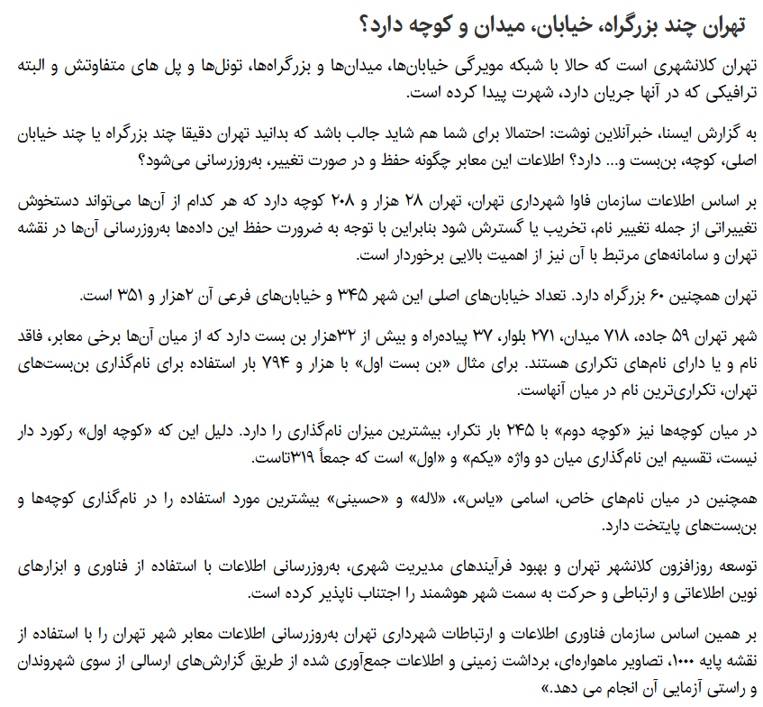
اطلاعاتی که در این گزارش وجود داره برای من راضی کننده نبود! برای همین گفتم خودم دست به کار بشم. اول اومدم نقشه osm تهران رو از آدرس زیر دانلود کردم :
وقتی فایل osm رو باز کنید یه سری تگ way رو به صورت زیر میبینید :
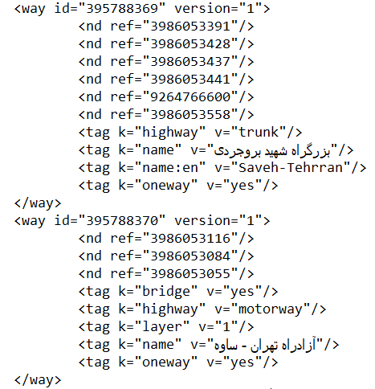
داخل این تگ way یه سری tag وجود داره که ویژگی های اون خیابون، کوچه و … رو نشون میدن. بعد رفتم یه ذره سرچ کردم تا ببینم معنی هر کدوم از این تگ ها چیه؟! در لینک زیر این تگ ها رو توضیح داده :
به ترتیب میریم جلو ببینیم چی میشه! بیاید اول Roads رو بررسی کنیم و ببینم چند نوع Road داریم؟در لینک بالا ۷ نوع Road رو معرفی کرده که عبارتند از :راه motorway : یک راه اصلی که خطوط رفت و برگشت آن مجزاست و دسترسی آن محدود است و اغلب، ۲ خط عبور یا بیشتر بعلاوه شانه اضطراری آسفالته در هر جهت دارد. همارز آزادراه، اتوبان و… است.
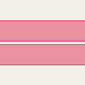
راه trunk : مهمترین راهها در شبکه جادهای یک کشور که آزادراه نباشد. لازم نیست حتماً دوبانده باشد.
راه primary : راه مهم بعدی در شبکه جادهای یک کشور که معمولاً شهرهای بزرگتر را به هم متصل میکند
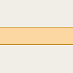
راه secondary : راه مهم بعدی در شبکه جادهای یک کشور که معمولاً شهرها را به هم متصل میکند
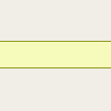
راه tertiary : راه مهم بعدی در شبکهٔ جادهای یک کشور که معمولاً شهرهای کوچکتر و روستاها را به هم متصل میکند
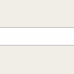
راه unclassified : کماهمیتترین راه ارتباطی در شبکهٔ جادهای یک کشور این درجه را میگیرد؛ یعنی راههای فرعی با درجهبندی کمتر از tertiary که بهمنظوری غیر از دسترسی به املاک استفاده میشوند (معمولاً روستاها و آبادیها را به هم متصل میکند). واژهٔ unclassified اصطلاحی قدیمی در شبکهٔ جادهای انگلستان است و به این معنی نیست که درجهبندی نامشخص است؛ برای درجهبندی نامشخص از highway=road استفاده نمایید.
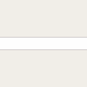
راه residential : راههایی که برای دسترسی به منازل مسکونی استفاده میشود و کارکرد ارتباطدهندگی مناطق مسکونی را ندارند. بیشتر، در امتداد منازل مسکونی هستند

اگر نقشه تهران رو در osm باز کنید میتونید هر کدوم از خیابان/کوچه های بالا رو که با رنگ های مختلف نمایش داده شده اند را ببینید :
نتیجه جستجو در فایل osm به شرح زیر است :
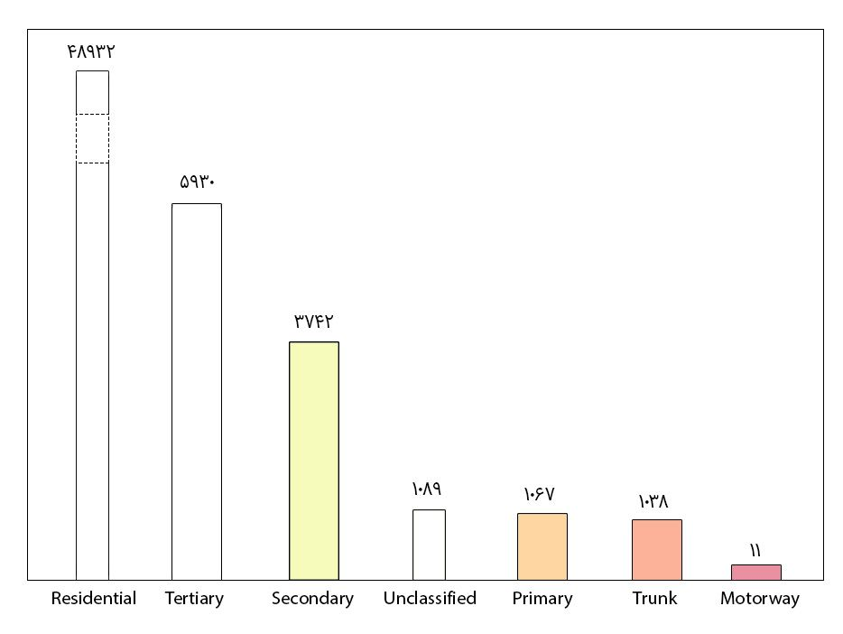
نکتهای که در اینجا وجود داره اینه که اگر یک خیابونی دو طرفه باشه، اون رو دو تا خیابون حساب میکنه. یا مثلا در مورد بزرگراه همت خیلی بیشتره :
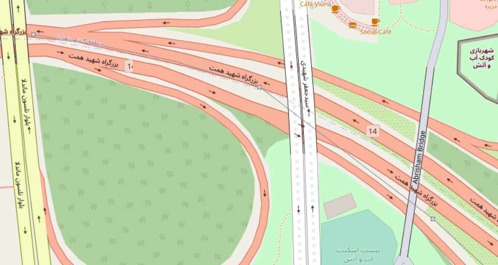
پس وقتی میگم از فلان خیابون با فلان ویژگی ۵ تا وجود داره، نکته بالا رو در نظر داشته باشید!اگر ابر کلمات اسامی تمامی این راه ها رو رسم کنیم نتیجه به صورت زیر میشه :
هر کدوم از راه ها یک تگ به نام maxspeed دارند که حداکثر سرعتی که میشه داخل اون خیابون حرکت کرد رو مشخص میکنه. واحد سرعت ها کیلومتر بر ساعت است :سرعت ۳۰ : ۴۴۲۰۵ خیابانسرعت ۴۰ : ۵۰۶۹ خیابانسرعت ۵۰ : ۳۳۵۷ خیابانسرعت ۶۰ : ۹۹۲ خیابانسرعت ۸۰ : ۵۱۷ خیابانسرعت ۹۰ : ۱۵۳ خیابانسرعت ۲۰ : ۱۱۷ خیابانسرعت ۷۰ : ۸۵ خیابانسرعت ۱۰ : ۳۴ خیابانسرعت ۱۲۰ : ۵ خیابانسرعت ۱۰۰ : ۴ خیابانسرعت ۵ : ۱ خیابانیه کوچه هم بود که سرعتش رو صفر زده بود! کوچه زیر بود :
توی لینک زیر حداکثر سرعت همین کوچه رو زده ۵۰ کیلومتر بر ساعت که به نظر صحیح میاد :
کوچه زیر هم حداکثر سرعتش ۵ کیلومتر بر ساعته! یعنی آدم ها هم یه ذره سریع حرکت کنند ممکنه تصادف کنن!
حالا میخوام ببینم اسم چند تا خیابون تا حالا تغییر کرده! اگر خیابون هایی که تگ old_name دارند رو بشمریم متوجه میشیم ۷۲۷ خیابون وجود داره که اسمشون تغییر کرده! لیست کاملشون در لینک زیر قرار دادم :
الان میخوام تگ leisure یا اوقات فراغت رو بررسی کنم. این تگ ۳۳ مقدار مختلف رو میتونه داشته باشه که فقط ۱۸ تا از این مقادیر در نقشه تهران وجود داره. از بین این ۱۸ تا هم فقط ۷ مورد رو که تعدادشون بیشتره رو بررسی میکنم. این ۷ مورد عبارتند از :مقدار park : همون پارک خودمونه یا به عبارت دقیق تر به پارک های وابسته به شهرداری گفته میشه. طبق اطلاعات نقشه، تعداد ۲۰۲۳ پارک داریم. ابر کلمات اسامی این پارک ها به صورت زیر است :
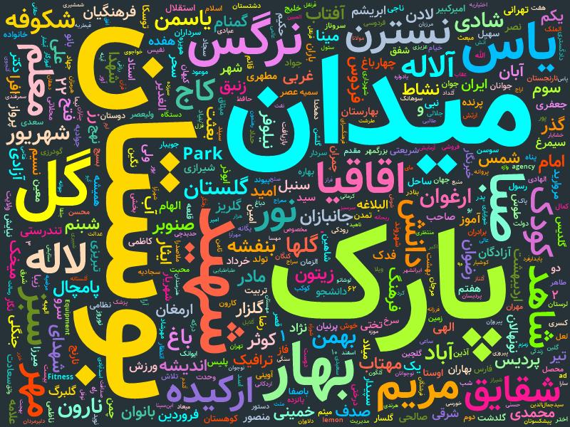
مقدار garden : به جایی گفته میشه که دار و درخت به صورت تزئینی گاشته میشن یا بنابر تعریف ویکیپدیا به زمینهایی که برای پرورش گل، میوه و درختان زیبا، حصارکشی شده باشند، باغ میگویند. توی نقشه به باغ سفارت ها، باغ های خصوصی، میدون هایی که گل کاری شدند گفته میشه. تعداد ۱۷۰۱ باغ در تهران داریم. ابر کلمات اسامی این باغ ها به صورت زیر است :
مقدار pitch : منطقه ای که برای تمرین یک ورزش خاص طراحی شده است که معمولاً با علامت گذاری مناسب مشخص می شود. این مقدار معمولا برای زمین های فوتبال، باشگاه ها (فوتبال، والیبال، تنیس و …) در نظر گرفته میشه. تعداد ۱۲۰۷ تا pitch در تهران داریم. ابر کلمات این pitch ها به صورت زیر است :
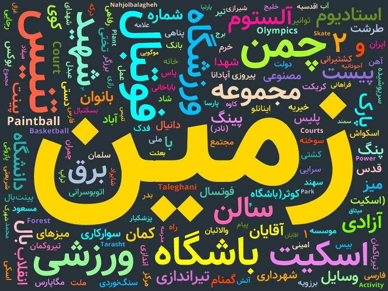
مقدار swimming_pool : همون استخر خودمونه! تعداد ۵۸۳ استخر در تهران داریم. البته استخر های خصوصی رو هم در حساب کردم و طبیعتا استخر های خصوصی اسم ندارن! ابر کلمات اسامی این استخر ها به صورت زیر است :
مقدار playground : فضایی که برای بازی کودکان طراحی شده است. زمین بازی معمولا بخشی از park به حساب میاد. تعداد ۳۶۶ زمین بازی در تهران داریم. البته معمولا اسم خاصی ندارند. صرفا بخشی از پارک رو داره نشون میده که زمین بازی اونجاست.مقدار sports_centre : به مجموعه های ورزشی گفته میشه. مثل مجموعه ورزشی انقلاب. تعداد ۲۹۴ مجموعه ورزشی در تهران داریم. ابر کلمات اسامی این مجموعه های ورزشی به صورت زیره :
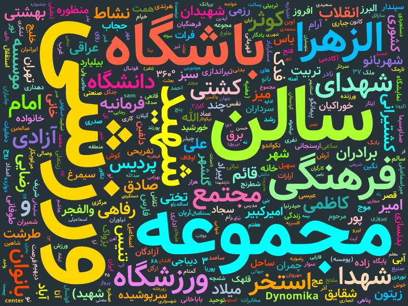
مقدار stadium : یک مرکز ورزشی بزرگ با صندلی های طبقه بندی شده قابل توجه یا همون استادیوم خودمون! البته به پیست های دوچرخه سواری و استادیوم های تنیس هم گفته میشه. تعداد ۴۰ استادیوم در تهران داریم. ابر کلمات اسامی این استادیوم ها به صورت زیره :
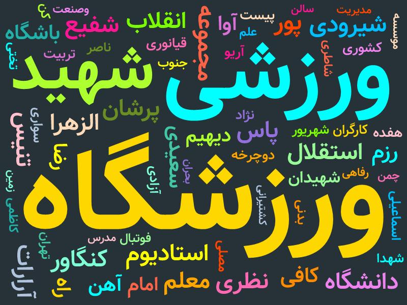
در بخش دوم موارد بیشتری رو بررسی خواهم کرد. منتظر باشید!
nb.neighbours()
| title | date | |
|---|---|---|
| prev | گشت و گذاری در iFilm | ۱۴۰۱/۰۲ |
| next | کاله در توییتر چه میکند؟! | ۱۴۰۱/۰۳ |